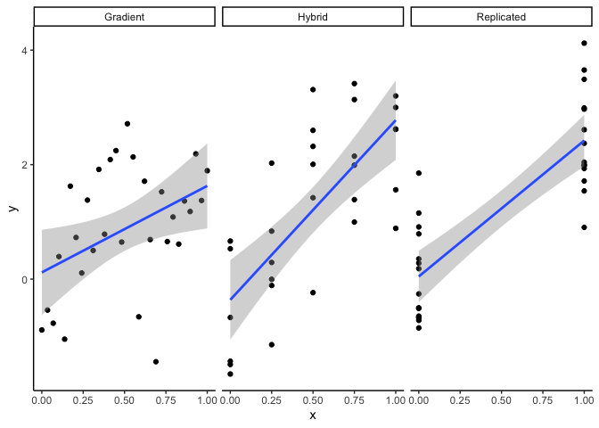

Tips for the design of ecological experiments
Are you planning an experiment in the lab or field, or an observational study? Its a good idea to talk to a statistician before you start.
Students often ask me for help with statistics after they’ve collected their data. However, it’s common they need help with statistics because of issues with the experimental (or observational) design.
A stats model can never completely fix design flaws. So below are some tips, based on my experiences helping students analyze their datasets.
Experimental design is complex because ultimately you are balancing logistical practicalities (like cost of sampling) with with is theoretically optimal. This blog is a starting point, but I recommend reading deeper into the references below.
For a more complete discussion of experimental design I recommend Quinn and Keough’s classic book: Experimental Design and Data Analysis for Biologists.
See also this recent review of four important logical principles that need to be met in design to infer causality.
This is a working document for my students, so please write me (chris.brown@griffith.edu.au) if you have suggestions for improvements on the below.
Some definitions
Just quickly, below I’ll refer to:
‘Experiments’ as manipulative experiments in the lab or field. Field studies in particular may also have some elements of ‘Observational’ studies, so there is a grey-area with:
‘Observational studies’ as field studies that sample across gradients of natural variation to try and identify effects on a response variable (AKA mensurative experiments).
‘Environmental gradients’ as gradients in a covariate of interest, e.g. rainfall or fishing pressure. These can occur naturally in the field, or be the result of manipulation in an experiment.
‘Samples’ are the units of observation.
‘Response’ is the variable(s) of interest that you hypothesize are affected by the treatments and/or covariates.
‘Covariates’, ‘predictors’ or ‘explanatory’ variables are the hypothesized drivers of changes in the response. Usually we’d use predictor or explanatory variable in the case of a manipulative experiment, whereas any term is fine in the case of an observational study.
‘Confounded’ means that you cannot distinguish the effects of two predictors. In a field observational study we could say that two covariates are ‘collinear’.
All of the experimental design concepts below also apply to analysis of field surveys or pre-existing datasets (e.g. citizen science data or meta-analyses). In these cases you are limited in the pre-existing ‘treatments’ available to you, so you will need to constrain your interpretation based on experimental design principles.
Tips
Plan for failure
Undoubtedly things will fail. Plants die when they’re not meant to, you can’t visit a site because of a suspicious landholder, your volunteer stuffs up a bunch of measurements, someone turns the power off in the lab… There’s a long list of reasons that your design won’t turn out like you planned.
So make sure your design is robust to the loss of some of your samples.
Stratify your sampling across treatments of interest
Ideally you’ll have relatively equal sampling intensities across different treatment levels, or along an environmental gradient of interest (but see below).
In the old days having equal sample sizes for each treatment level, a ‘balanced design’ was critical for straightforward stats (e.g. with Type I ANOVA). This rule isn’t so strict with modern GLMs and extensions.
However, it is still important to have sufficient sampling across a gradient or levels of a treatment. You need this to be able to estimate the treatment’s effect relative to background variation.
Its usually straightforward in laboratory experiments to have equal sample sizes of each treatment level. In observational studies, balancing sampling can be more challenging.
A common issue is insufficient sampling at all combinations of environmental gradients. As an example, I’ve often worked on analyses of how pollution and fishing pressure affect coastal fish abundance. Unfortunately, these gradients are highly confounded: polluted sites are nearer the coast and tend also to have higher fishing pressure. This means it is impossible to separate the effects of pollution and fishing pressure on fish abundance.
An improved observational design would include sites with low pollution and high fishing pressure and vice-versa (if they exist). This would enable us to statistically separate the effects of pollution and fishing, as well as estimate their interaction.
Dealing with background variation: randomize or control?
“Stratify experiments with respect to your knowledge and randomise with respect to your ignorance” - Professor Alan T. James, via Bill Venables.
You have two broad options for dealing with background variation. You can try and control them, so they are constant across all samples. For instance, in an experiment you may keep temperature constant, so you can examine the effects of nutrients on algal growth.
Controlled designs have greater power to detect changes of interest. However, they are less general (the results of the algae experiment above only applies at one temperature) and more susceptible to overestimating the effect of a covariate.
An alternative option is to randomize your sampling with respect to background sources of variation. Such a design will have reduced power compared to a controlled design, but the effect sizes you estimate will be more general and realistic (typically they are smaller).
If you go with randomisation you may want to try increase replication, to address power issues.
Randomize your sampling
Random sampling is the basic assumption underlying most stats tests.
Watch out for sample selection methods that masquerade as random sampling. Ad-hoc sampling, like throwing a quadrat around the intertidal zone, can result in biased inferences.
For instance, in a mangrove forest you’d have to be careful to sample both sparse and dense patches of forest. Identifying sample locations beforehand with randomly picked GPS points is one way to address this.
Another example is citizen science data, which tends to be heavily biased by accessibility of sites.
Stats can help overcome non-random sampling - you can control statistically for non-random designs if you have some idea of the drivers of sampling (like distance to cities for citsci). But you’ll need to know the drivers well enough to model them.
Blocking designs
Once you’ve identified psuedo-replication you may want to use a blocking design to deal with the issue.
For example, say you are applying different nutrient and temperature treatments to see how it affects algae growth. You can only grow 10 samples of algae per week and your target is 50 samples. So you will run the experiment over 5 weeks, doing 10 samples per week.
Ideally, you will want to run every nutrient and temperature treatment every week, so you can separate the effect of ‘week’ from your treatment effects.
But say you only have one incubation chamber for maintaining a constant temperature. So each week can only be one temperature. Then you’ll want to either: run the same temperature over multiple weeks or, run a gradient of temperatures (see below). Within each week you will still run every nutrient level. You will also want to randomize the order that the temperature treatments are applied.
This will ensure you can estimate the temperature effect and how it applies across different nutrient levels. Multiple samples across weeks will let you remove (statistically) that nuisance variable.
More covariates or more replicates?
Easy answer: maximize replication over measuring ‘everything’ at each sample.
Initial plans I see from students, especially for field designs, often involve measuring a lot of variables at very few sites. But, such designs end up with have low power and a lot of confounded variables, because you end up with more covariates to test than samples to test them.
You have a better chance of getting a useful and interesting result if you focus on just a few major patterns. Then you can sample more sites and get replication numbers up.
As an example, imagine you can sample 3 sites per day to do rapid assessments of insect taxa diversity and forest structure, or take 2 days to make a detailed assessment of a single site, including document all plant and insect species. The rapid assessment could get you to 42 sites over 3 weeks, versus only 7 sites for the detailed assessment. 42 sites is getting up towards a sample size that is useful for regression modelling (e.g. with glm), whereas 7 is far from enough.
Of course the replication level you need depends on how variable the system is, but in my (marine fish biased) experience of analyzing ecological field experiments, ~50 independent sites is usually a minimum.
I’ll add that if you can easily sample more covariates, go for it. You may want to condition on them to statistically control for them when you do the analysis.
Conceptual model
Developing a conceptual model of your system, through talking with experts and reading the literature, can help you identify key predictors and refine your research question. This means you can better target your sampling design.
More sites or more replication at fewer sites?
Closely related to the above idea, I often see students intensely replicating their designs at very few sites (e.g. doing many days of sampling at a single site, or numerous transects per site). But these are psuedoreps. Your study will be more general if you can cover more sites with less replication at each site.
Aiming for greater replication can also help you obtain a deeper understanding of your study topic. You’ll see more different circumstances which may help you formulate better hypotheses.
Replicated or Gradient design?
Easy answer: gradient designs are better for prediction, and designing for prediction is the future of ecology.
But, replicated designs have more power to detect monotonically increasing responses to the predictor.
Say we are doing an experiment measuring how fast algae grow in flasks under different nutrient levels. We can fit 30 flasks in the lab. Here’s three ways to assign them to nutrient levels: Gradient (every flask gets a different nutrient level), replicated (just two nutrient levels), or hybrid of gradient and replicated.
 What should you do?
The replicated design is more typical of ecological experiments. This design gives you the greatest power to detect an effect of nutrients on algae growth (meaning best chance to find p<0.05 if there is an effect).
Replicated designs may also be preferred for practical reasons, for instance, it may be expensive or time consuming to have multiple levels of the treatment (e.g. requiring multiple different incubators in a warming experiment).
BUT, there’s a catch. What if your ecological response shows a humped or saturating relationship with the predictor variable? Then your replicated design implies a straight-line relationship between the two levels, e.g. here are results of a gradient vs replicated design for a curved relationship:
So your ability to predict the ecological response is very poor with the replicated design.
The above graph assumes you at equal intervals along the gradient. If you know there are regions of rapid change in your response, you could intensify your sampling around those regions.
Hybrid designs are a compromise on prediction and power and may work well in many cases.
Ecology desperately needs to become more ‘predictive’ for a whole heap of reasons, including being able to inform ecosystem management, predict effects of multiple stressors, and for testing fundamental theories. So I encourage you to consider a gradient or hybrid design.
When designing a gradient, look out for high leverage points, e.g. one temperature extreme 5 degrees greater than any of your other treatments/surveys (with no replication) will have a high influence on your fitted model.
Realistic treatment ranges, but consider extreme scenarios too
The classic example is early ocean acidification experiments that acidified water in experimental treatments to what would be equivalent to atmospheric concentrations of CO2 of 1000ppm (we’re currently at about 420ppm and projected to reach ~500-600ppm by 2050).
So treatments should be environmentally relevant. BUT, the increasing prevalence of extreme weather events means that you may want to consider some extreme scenarios, e.g. for heatwaves. In some fields not enough experiments consider the impacts of extreme events. For instance, a gradient design could consider both contemporary as well as projected mid-range and extremes values of the predictor.
Ask dumb questions
I often hear from students questions like ‘this might be a dumb question but, why do we always do 3 transects per site?’.
Dumb questions are great because they reveal tacit knowledge of experts and hidden assumptions. And sometimes they reveal important assumptions that could overturn or invalidate a study’s findings. Like the emperors new clothes.
So don’t be afraid to ask ‘dumb’ questions about experimental design.
Summary
Designing experiments takes careful thought and planning. The skill of design is finding where statistical and logical requirements meet practical realities.
The above are some of my tips, but there are of course always exceptions, the best you can do is read the literature, consult people with experience in your field and ask lots of questions.
If you have advice to add, or don’t agree with any of the above, feel free to let me know: chris.brown@griffith.edu.au